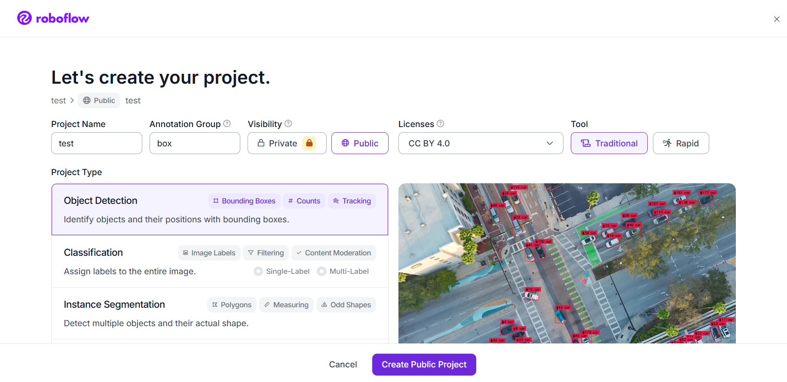
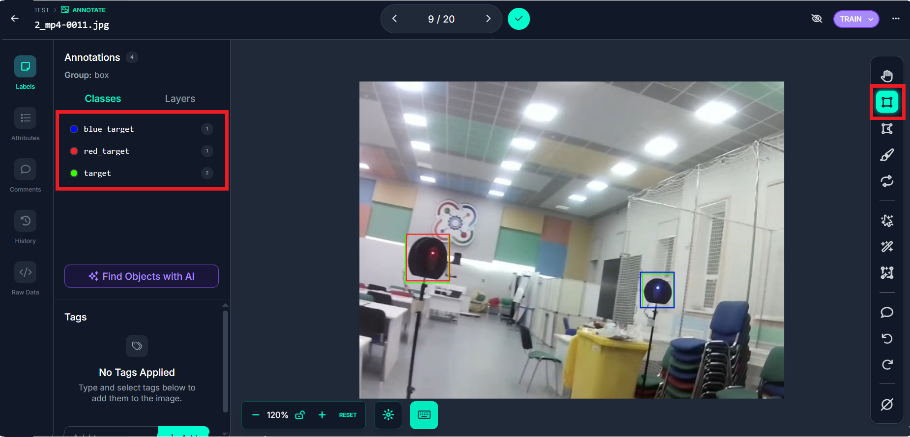

Создание Dataset на Roboflow
Roboflow — это платформа для подготовки данных компьютерного зрения, которая позволяет собирать, размечать, предобрабатывать и экспортировать датасеты для обучения нейронных сетей. Для платформы Eurus-Edu мы будем создавать датасет для обнаружения различных объектов
Регистрация и создание проекта
После регистрации создаём новый проект во вкладке Projects. Заполняем параметры:
Project Name: eurus-edu (или ваше название)Project Type: Выберите Object DetectionAnnotation Group: название объектов, которые будем размечатьtool: traditional

Создание классов для разметки
В левой панели нажмите "Classes"
В имени класса лучше задавать название определяемого объекта, цвет можно выбрать любой

Загрузка видео для разметки
Видио для извлечения кадров с объектом записываем при помощи кода на Python
Код для записи видео:
Загружаем видео в блок Unassigned во вкладке Annotation
Рекомендуемая частота кадров - по 1 кадру каждые 0.2 секунды
На этом этапе удаляем неудачные кадры и только после этого переносим dataset в блок Annotating
В Annotating размечаем dataset уже подготовленными классами
